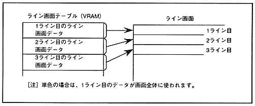

Return to previous page ｜ Return to menu ｜ Go to next page
-
Chapter 7 Line screen
- The line screen has two screens: a line color screen (LNCL) and a back screen (BACK). You can specify a color for each line or specify the entire screen as a single color. Unlike the scroll screen, characters cannot be displayed. To use the line color screen, the data for each line is stored in the VRAM as a line color screen table. In the case of a single color, the top data of the table is used for the entire screen. The line screen is shown in Figure 7.1.
Figure 7.1 Line screen

-
7.1 Line color screen
- Line color screen (LNCL) is used only for color calculation, and you can choose whether to specify the entire screen as a single color or specify the color for each line. The color RAM address of the color used for the line is stored in VRAM as line color screen data.
∙ The number of lines specified by one line color screen data varies depending on the interlace setting. In non-interlace and double-dense interlace modes, you can specify a color for each line, but in single-dense interlace mode, you can specify only for every two lines.
Also, the line color screen can be rotated by using the line color screen data in the coefficient data. For coefficient data, refer to “ 6.4 Coefficient Table Control ”.
∙ The configuration of the line color screen table for each interlace mode is shown in Figure 7.2, and the data configuration on the line color screen table is shown in Figure 7.3.
Return to previous page ｜ Return to menu ｜ Go to next page